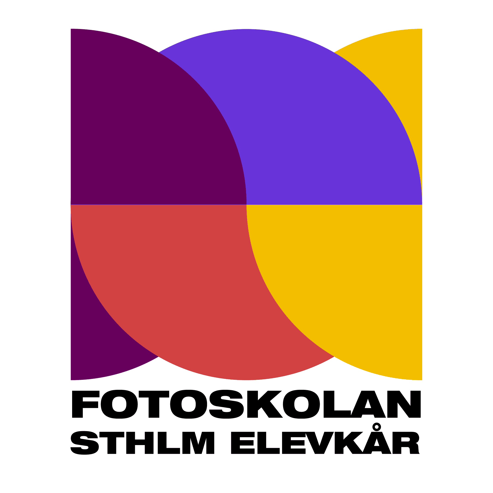
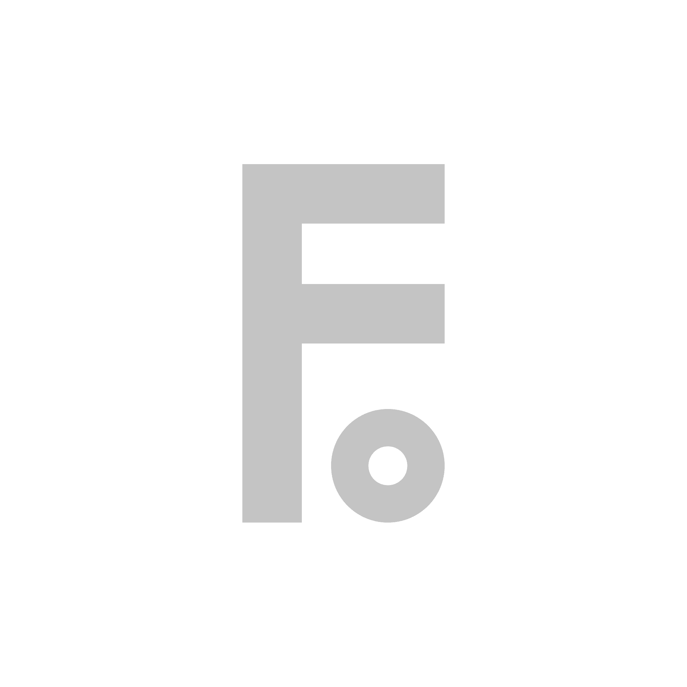
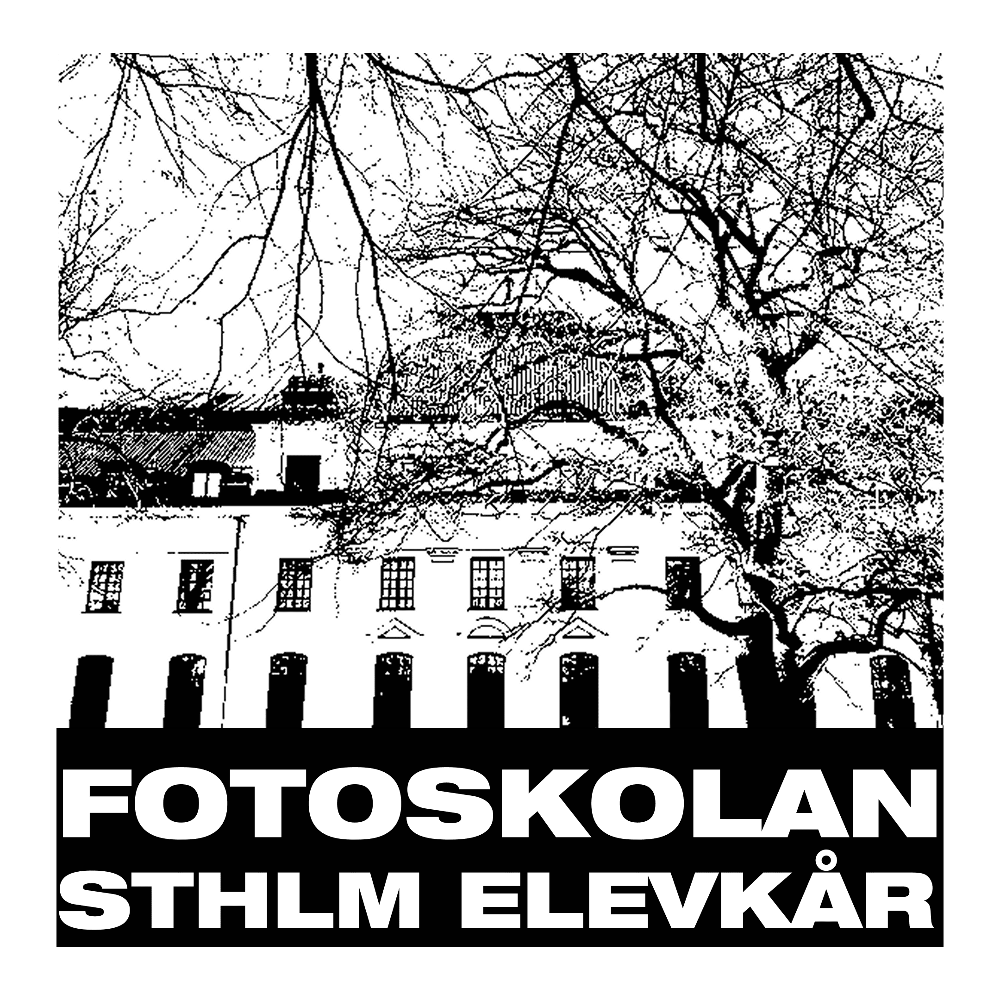
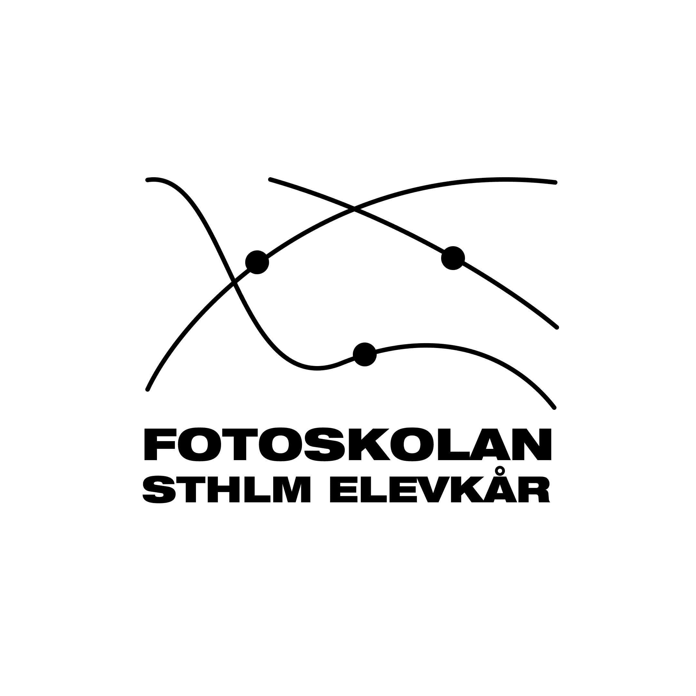

Fotoskolan Stockholms Elevkår
Ett identitetsprojekt där jag tog fram flera logotypförslag för Fotoskolan Stockholms elevkår, med fokus på att skapa ett tydligt och användbart visuellt uttryck.




Projektet gick ut på att ta fram en ny logotyp för Fotoskolan Stockholms elevkår. Arbetet inleddes med att utforska olika visuella riktningar och testa hur identiteten kunde uttryckas genom form, typografi och symbolik.
Genom att ta fram flera olika förslag kunde jag jämföra och utvärdera vilka lösningar som kändes mest relevanta och användbara i olika sammanhang. Fokus låg på att skapa något som både kändes tydligt och fungerade praktiskt i olika format.
Projektet resulterade i flera konceptuella förslag, där ett av dem stack ut som det starkaste och mest sammanhållna uttrycket.